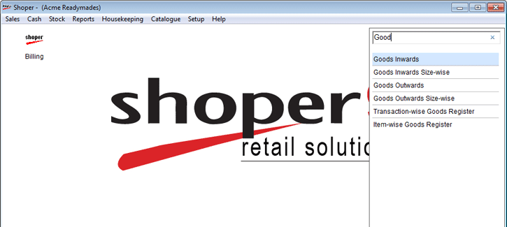
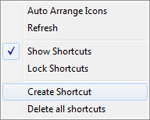
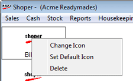

This option helps in searching the menu option dynamically.
The Search Menu is displayed as shown.

Enter the key word of the menu to be searched. The results are displayed dynamically based on the input. From the search result drop down, double click to open the menu or use downward / upward arrow to select the option and press enter to open the menu item.

Auto arrange icons: Click to arrange the icons automatically
Refresh: Click to refresh the menu
Show Shortcuts: Select to display the icons in Shoper Main screen. By Default it is selected.
Lock Shortcuts: Select to lock the shortcuts. If this option is selected the Shortcuts cannot be moved.
Create Shortcut: Select to create shortcut in Shoper Main screen for the logged in user.
Delete all shortcuts: Select to delete all the icon based shortcuts for the logged in user.
Right click on the icon to display the following screen.

Change Icon: Click to change the icon for the selected shortcut. The desired icon should be placed in the templates folder in Application path.
Note: “.ico” images are supported.
Set Default Icon: Click to set default Shoper icon for this shortcut incase custom icons is used.
Delete: Click to delete the shortcut.